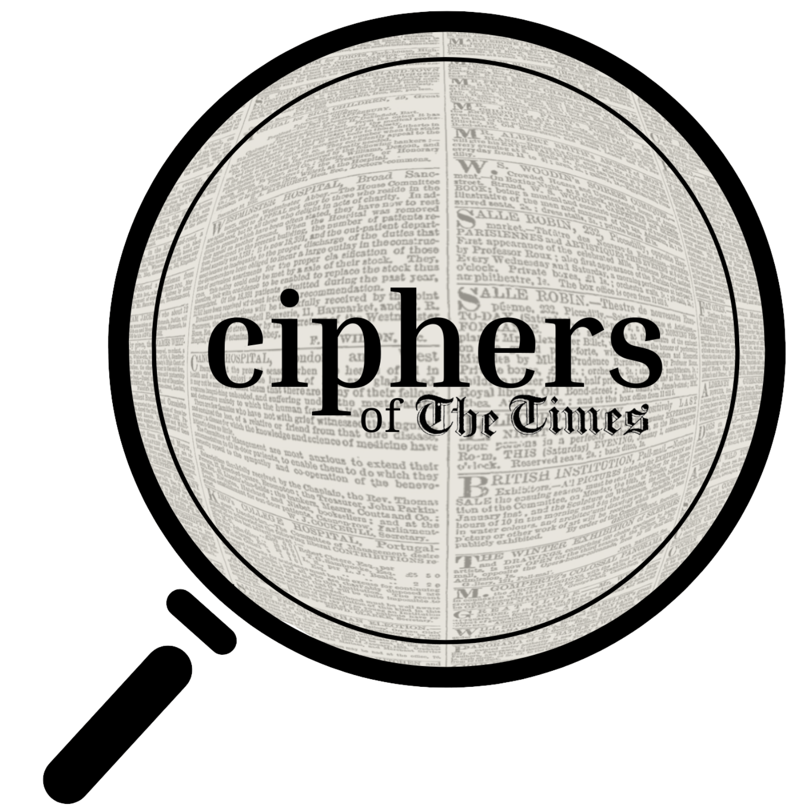

Journey into cryptic communications of the Victorian Era 
Ciphers of The Times is an exhibition curated by Library Ponders, a research team based in the McGill University Library. We are dedicated to exploring a Victorian-era newspaper phenomenon called “The Agony Columns.” Characterized by anonymity, lack of censorship, and encryption, the “agonies” rapidly became some of the most widely-read texts in Victorian England. Encoded messages were often featured in the columns, written and enjoyed by forlorn lovers, cunning criminals, savvy detectives, and newspaper readers who reveled in the dramas unfolding on the newspapers’ front pages. Our exhibition seeks to recount some of the encrypted stories of the Times, understand their influence on Victorian society, and explore their lasting fascination.
You may use the navigation bar to access different elements of the project. More information about the Agony Columns can be found through the FAQ tab, including a timeline of their development. The Game tab is an interactive exhibit showcasing the agony ads and their relationship to encryption. Data from the project's Digital Humanities aspect will be hosted under the Data tab. A miscellaneous project which analyzes languages for Victorian patterns of speech can be found under the Vibecheck tab. Materials compiled by the project can be found under Resources, and more information about Library Ponders is provided under About.